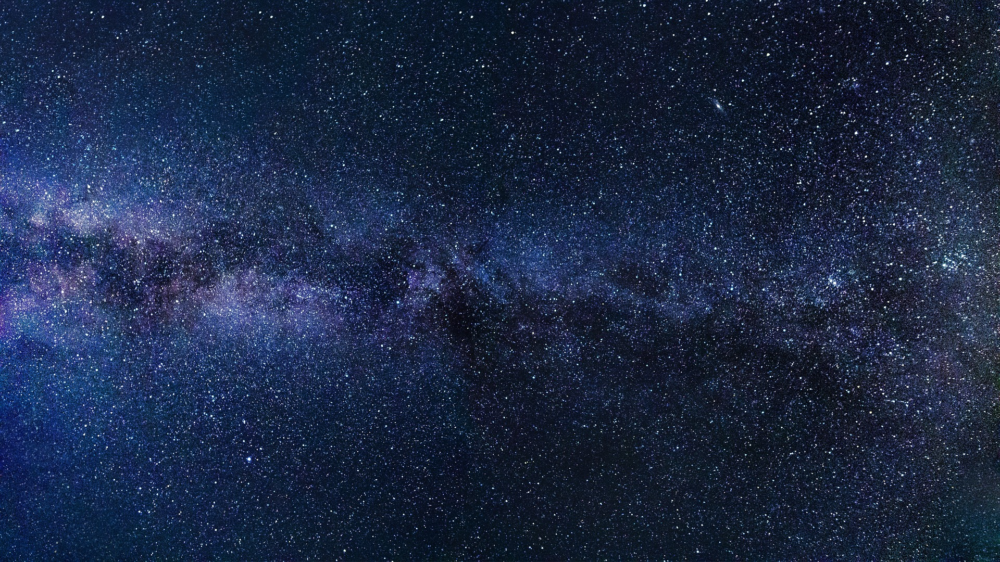
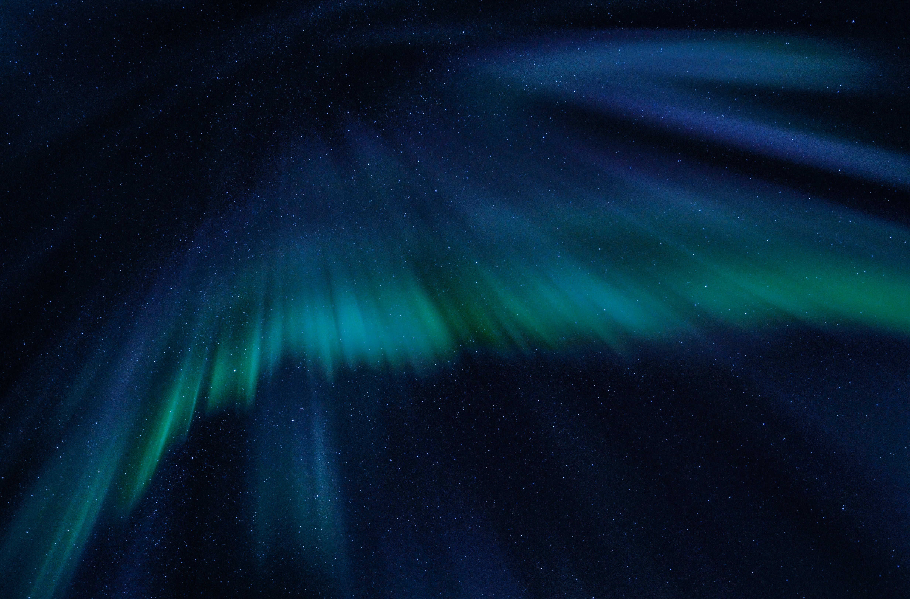

Lunar Soil
MOON

MOON
MOON

CHAPTER 4: LUNAR GEOLOGY
Oriental Basin
The Oriental Basin on the Moon is a large impact basin located on the Moon's far side. It is one of the largest and oldest impact features on the lunar surface, formed billions of years ago by a powerful asteroid or comet collision. The basin is roughly 930 miles (1,500 kilometers) in diameter and is characterized by a central mountain peak and a ring of rugged mountain ranges. It's a prominent feature of the Moon's geology and has been extensively studied by lunar missions.
Impact Basin:
the largest impact basin on the Moon (diameter = 2600 km), and one of the largest impact basins in the Solar System. The distance from its depths to the tops of the highest surrounding peaks is over 15 km, almost twice the height of Mount Everest on Earth. SPA is interesting for a number of reasons. To begin with, large impact events can remove surficial materials from local areas and bring material from beneath the impact craters to, or closer to, the surface. The larger the crater, the deeper the material that can be exposed. As SPA is the deepest impact basin on the Moon, more than 8 km (5 mi) deep, the deepest lunar crustal materials should be exposed here. In fact, the Moon's lower crust may be revealed in areas within SPA: something not found anywhere else on the Moon.
Tycho Crater:
Tycho Crater is perhaps the most conspicuous feature on the entire Moon.
It is named after Tycho Brahe (1546-1601), the Danish astronomer whose measurements of the movements of Mars enabled Johannes Kepler to show that the planets’ orbits are elliptical, not circular.
Tycho crater has a high, continuous wall and a prominent central peak, but what distinguishes it is its unrivalled system of bright rays, which extend outward from the crater in all directions, covering an area of over 550,000 square km and containing dense clusters of small secondary craterpits.
Tycho Crater is scientifically significant because it provides valuable insights into the Moon's geological history and composition. The impact that created Tycho excavated material from beneath the lunar surface, allowing scientists to study the Moon's subsurface layers. The rays and ejecta from Tycho have also been used to estimate the ages of other lunar features based on how much they have been overlain by Tycho's material.
The Aristarchus Plateau:
The Aristarchus plateau is one of the most geologically diverse places on the Moon: a mysterious raised flat plateau, a giant rille carved by enormous outpourings of lava, fields of explosive volcanic ash, and all surrounded by massive flood basalts. A relatively recent asteroid (or comet) slammed into this geologic wonderland, blowing a giant hole in the ground revealing a cross section of over 3000 meters (9800 ft) of geology. No wonder planners for the Apollo missions put this plateau high on its list of targets for human exploration. This amazing image was acquired on 10 November 2011 as LRO passed north-to-south about 70 km east of the crater's center while it was slewed 70° to the west. The spacecraft was only 26 km (16.2 miles) above the surface; about two times lower than normal. For a sense of scale, that altitude is only a little over twice as high as commercial jets fly above the Earth!
Aristarchus crater is located on the southeast edge of the Aristarchus Plateau. This gaping crater is 40 km wide and 3.5 km deep. The ledges forming the wall of the crater, which look a lot like those of a strip mine, are actually blocks of pre-impact crustal and surficial rocks that slumped into the crater during the late stages of its formation. The impact that formed this crater occurred on a mare-highland boundary and thus excavates a variety of rock types.
Far Side Of Moon:
The "far side of the Moon," also known as the "dark side of the Moon," is the hemisphere of the Moon that faces away from Earth. Here's a detailed explanation:
1. Why It's Called the "Far Side": The Moon is tidally locked with Earth, which means that it always shows the same face to our planet due to gravitational forces. The side of the Moon that constantly faces Earth is called the "near side," and the opposite side is the "far side." It's important to note that the term "dark side" is a bit misleading; it's not always dark, but it's called that because it's the side that we don't see from Earth.
The far side of the Moon was largely unexplored until the era of space exploration. In recent years, missions like China's Chang'e 4 and Chang'e 6 have ventured to the far side, studying its geology, topography, and cosmic environment. These missions have provided valuable insights into this previously mysterious part of the Moon.
Far Side Craters:
There are two types of impact craters on the Moon: primary and secondary. Primary craters form as the result of an asteroid or comet (or spacecraft) impacting the Moon. Secondary impact craters formed from the impact of ejecta expelled during primary crater formation. Secondary impact craters dominate this scene, possibly from the relatively recent impact that created nearby Jackson crater (43.5 miles across), located 42 miles to the west.